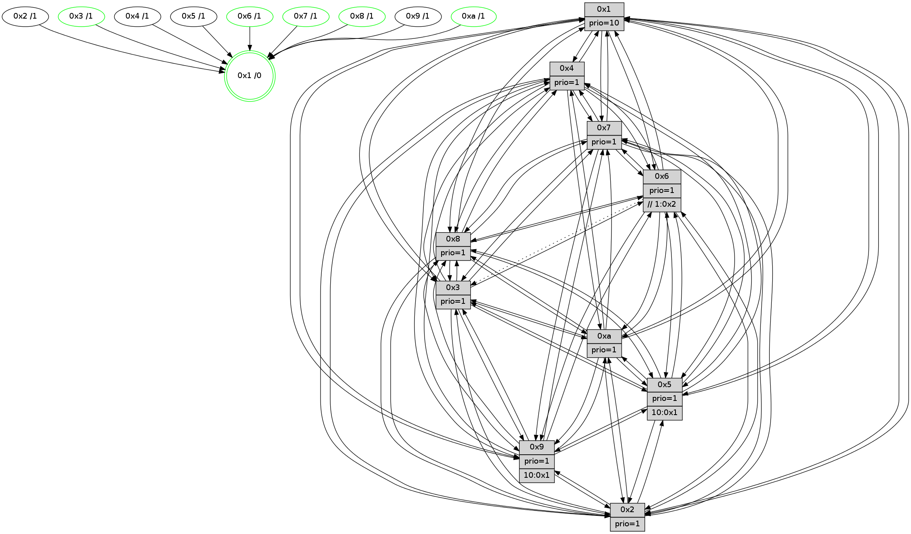

>> << IDX [start] -100 -25 -5 +0 +5 +25 [1570.38549113]
 Previous packets
----------------------------------------------------------------------
1565.656706 beacon01(faad) #0 coord=01,02,03,04,05,06,07,0a,09,08 cycle=688.0ms assoc
-- color-indic=1 64 2b 97
1565.666689 beacon02(faad) #0 coord=01,02,03,04,05,06,07,0a,09,08 cycle=688.0ms assoc 64 b8 a6
1565.676688 beacon03(faad) #0 coord=01,02,03,04,05,06,07,0a,09,08 cycle=688.0ms assoc 64 c2 eb
1565.686689 beacon04(faad) #0 coord=01,02,03,04,05,06,07,0a,09,08 cycle=688.0ms assoc 64 b5 01
1565.696687 beacon05(faad) #0 coord=01,02,03,04,05,06,07,0a,09,08 cycle=688.0ms assoc 64 cf 4c
1565.706688 beacon06(faad) #0 coord=01,02,03,04,05,06,07,0a,09,08 cycle=688.0ms assoc 64 41 9b
1565.716689 beacon07(faad) #0 coord=01,02,03,04,05,06,07,0a,09,08 cycle=688.0ms assoc 64 3b d6
1565.726694 beacon0a(faad) #0 coord=01,02,03,04,05,06,07,0a,09,08 cycle=688.0ms assoc 64 4a dd
1565.746695 beacon08(faad) #0 coord=01,02,03,04,05,06,07,0a,09,08 cycle=688.0ms assoc 64 be 47
1565.757858 [Hello(2): seq=994 sym=4,5,7,6,3,9,8,10,1 sysInfo=hasWarning stat=4:13,6,10,15/5:2,0,13,4/7:0,6,1,3/6:2,3,1,0/3:8,10,3,0/9:8,14,7,11/8:7,5,8,1/10:7,13,6,13/1:5,15,10,0]
1565.760776 [Color(8) seq=585 @0:0 prio=1]
1565.762999 [Color(4) seq=525 @0:0 prio=1]
1565.764534 [Hello(5): seq=998 sym=7,6,4,2,1,9,8,10,3 sysInfo=hasWarning stat=7:8,6,2,1/6:7,9,2,2/4:3,0,6,1/2:7,6,1,0/1:11,0,10,0/9:14,7,14,13/8:11,8,8,9/10:6,1,1,11/3:8,12,2,0]
1565.768046 [Hello(6): seq=998 sym=2,5,4,7,9,8,10,1 asym=3 sysInfo=hasWarning stat=2:4,13,5,1/5:13,13,1,6/4:10,1,10,10/7:12,7,11,1/9:13,14,14,12/8:14,0,5,11/10:2,11,7,15/1:0,2,1,1/3:15,11,13,0]
1565.772892 [Hello(1): seq=907 sym=4,2,9,5,10,3,8,6,7 sysInfo=coloring-mode-on,ColoringModeRequestCalled stat=4:4,6,12,5/2:9,2,5,7/9:12,8,7,4/5:2,10,14,11/10:8,13,0,9/3:5,8,15,13/8:15,7,6,8/6:14,2,10,5/7:6,3,15,3]
1565.775564 [Hello(3): seq=998 sym=1,7,6,2,4,8,9,10,5 sysInfo=hasWarning stat=1:15,0,4,0/7:14,3,1,0/6:1,3,0,0/2:6,8,1,0/4:14,10,2,15/8:4,4,10,10/9:7,7,10,2/10:11,10,0,6/5:7,15,8,3]
1565.778396 [Color(3) seq=627 @0:0 prio=1]
1565.780634 [STC(1) #0.282 tree-change,inconsistent-stability,stable,to-color d=0]
1565.783041 [Color(6) seq=630 @0:0 prio=1 >>1.@2,1.@3,1.@4]
----------------------------------------------------------------------
1566.444835 beacon01(faad) #0 coord=01,02,03,04,05,06,07,0a,09,08 cycle=688.0ms assoc
-- color-indic=1 64 97 92
1566.454819 beacon02(faad) #0 coord=01,02,03,04,05,06,07,0a,09,08 cycle=688.0ms assoc 64 04 a3
1566.464818 beacon03(faad) #0 coord=01,02,03,04,05,06,07,0a,09,08 cycle=688.0ms assoc 64 7e ee
1566.474818 beacon04(faad) #0 coord=01,02,03,04,05,06,07,0a,09,08 cycle=688.0ms assoc 64 09 04
1566.484817 beacon05(faad) #0 coord=01,02,03,04,05,06,07,0a,09,08 cycle=688.0ms assoc 64 73 49
1566.494818 beacon06(faad) #0 coord=01,02,03,04,05,06,07,0a,09,08 cycle=688.0ms assoc 64 fd 9e
1566.504818 beacon07(faad) #0 coord=01,02,03,04,05,06,07,0a,09,08 cycle=688.0ms assoc 64 87 d3
1566.514823 beacon0a(faad) #0 coord=01,02,03,04,05,06,07,0a,09,08 cycle=688.0ms assoc 64 f6 d8
1566.534826 beacon08(faad) #0 coord=01,02,03,04,05,06,07,0a,09,08 cycle=688.0ms assoc 64 02 42
1566.546852 [Hello(9): seq=942 sym=2,5,3,4,7,6,8,10,1 sysInfo=hasWarning stat=2:4,5,15,13/5:7,9,7,0/3:3,2,13,7/4:11,0,8,4/7:1,0,0,0/6:2,13,14,3/8:13,9,8,10/10:11,11,9,0/1:2,14,1,1]
1566.549688 [STC(9)->1 #0.282 tree-change,inconsistent-stability,to-color d=1]
1566.551016 [STC(2)->1 #0.282 tree-change,inconsistent-stability,to-color d=1]
1566.552727 [STC(5)->1 #0.282 tree-change,inconsistent-stability,to-color d=1]
1566.555779 [Hello(4): seq=998 sym=5,8,6,2,3,9,7,10,1 sysInfo=hasWarning stat=5:9,14,12,4/8:9,7,1,0/6:14,14,8,4/2:1,9,14,3/3:8,5,6,1/9:2,8,14,4/7:11,1,2,0/10:2,14,6,15/1:9,9,0,1]
1566.558232 [STC(3)->1 #0.282 tree-change,inconsistent-stability,stable,to-color d=1]
1566.560930 [Hello(7): seq=998 sym=2,3,5,6,8,4,9,10,1 sysInfo=hasWarning stat=2:8,3,11,6/3:11,3,0,6/5:12,13,14,5/6:3,2,12,15/8:4,11,4,2/4:8,14,3,1/9:15,8,6,4/10:9,5,4,9/1:9,0,13,0]
1566.563336 [STC(4)->1 #0.282 to-color d=1]
1566.565858 [Hello(10): seq=931 sym=6,2,3,8,7,5,9,4,1 sysInfo=hasWarning stat=6:10,12,13,7/2:4,9,15,2/3:10,7,6,15/8:8,4,2,7/7:1,5,15,10/5:10,13,7,3/9:12,5,2,1/4:0,0,11,4/1:4,8,0,1]
1566.568987 [STC(10)->1 #0.282 tree-change,inconsistent-stability,stable,to-color d=1]
1566.570246 [Hello(8): seq=942 sym=5,2,3,7,9,6,4,10,1 sysInfo=hasWarning stat=5:12,1,8,3/2:2,0,3,14/3:7,7,8,6/7:11,3,2,0/9:10,0,9,7/6:2,6,5,3/4:6,11,14,3/10:1,13,15,5/1:15,2,3,0]
1566.573703 [STC(8)->1 #0.282 tree-change,inconsistent-stability,stable,to-color d=1]
1566.576256 [STC(7)->1 #0.282 tree-change,inconsistent-stability,stable,to-color d=1]
1566.577581 [TreeStatus(10)-.->1 #0.282 tree-change,inconsistent-stability,stable child=1]
1566.578837 [TreeStatus(7)-.->1 #0.282 tree-change,inconsistent-stability,stable child=1]
1566.584359 [Color(1) seq=678 @0:0 prio=10]
----------------------------------------------------------------------
1567.232964 beacon01(faad) #0 coord=01,02,03,04,05,06,07,0a,09,08 cycle=688.0ms assoc
-- color-indic=1 64 53 9c
1567.242946 beacon02(faad) #0 coord=01,02,03,04,05,06,07,0a,09,08 cycle=688.0ms assoc 64 c0 ad
1567.252946 beacon03(faad) #0 coord=01,02,03,04,05,06,07,0a,09,08 cycle=688.0ms assoc 64 ba e0
1567.262947 beacon04(faad) #0 coord=01,02,03,04,05,06,07,0a,09,08 cycle=688.0ms assoc 64 cd 0a
1567.272946 beacon05(faad) #0 coord=01,02,03,04,05,06,07,0a,09,08 cycle=688.0ms assoc 64 b7 47
1567.282948 beacon06(faad) #0 coord=01,02,03,04,05,06,07,0a,09,08 cycle=688.0ms assoc 64 39 90
1567.292948 beacon07(faad) #0 coord=01,02,03,04,05,06,07,0a,09,08 cycle=688.0ms assoc 64 43 dd
1567.302953 beacon0a(faad) #0 coord=01,02,03,04,05,06,07,0a,09,08 cycle=688.0ms assoc 64 32 d6
1567.322955 beacon08(faad) #0 coord=01,02,03,04,05,06,07,0a,09,08 cycle=688.0ms assoc 64 c6 4c
1567.334140 [Hello(2): seq=995 sym=4,5,7,6,3,9,8,10,1 sysInfo=hasWarning stat=4:14,7,10,15/5:3,0,14,4/7:1,6,2,4/6:3,4,1,0/3:9,11,4,0/9:8,14,7,11/8:8,6,9,1/10:8,13,7,14/1:6,0,11,0]
1567.337341 [TreeStatus(4)-.->1 #0.282 tree-change,inconsistent-stability child=1]
1567.338980 [Hello(3): seq=999 sym=1,7,6,2,4,8,9,10,5 sysInfo=hasWarning stat=1:15,1,5,0/7:15,3,2,1/6:1,4,0,0/2:7,8,1,0/4:14,10,2,15/8:5,5,11,10/9:7,7,10,2/10:12,10,1,7/5:7,15,8,3]
1567.341655 [Color(8) seq=586 @0:0 prio=1]
1567.343122 [Hello(1): seq=908 sym=4,2,9,5,10,3,8,6,7 sysInfo=coloring-mode-on,ColoringModeRequestCalled stat=4:4,6,12,5/2:9,2,5,7/9:13,8,7,4/5:2,10,14,11/10:8,13,0,9/3:5,8,15,13/8:15,7,6,8/6:14,3,10,5/7:6,3,15,3]
1567.345910 [Hello(5): seq=999 sym=7,6,4,2,1,9,8,10,3 sysInfo=hasWarning stat=7:9,6,3,2/6:8,10,2,2/4:4,0,6,1/2:7,6,1,0/1:12,1,11,0/9:14,7,14,13/8:12,8,9,9/10:7,1,2,12/3:9,13,3,0]
1567.349888 [Hello(6): seq=999 sym=2,5,4,7,9,8,10,1 asym=3 sysInfo=hasWarning stat=2:5,13,6,1/5:13,13,2,6/4:11,1,10,10/7:13,7,12,2/9:14,14,15,12/8:15,1,6,11/10:3,11,8,0/1:0,3,1,1/3:15,11,14,0]
1567.352781 [Color(6) seq=631 @0:0 prio=1 >>1.@2,1.@3,1.@4]
1567.362352 [Color(3) seq=628 @0:0 prio=1]
----------------------------------------------------------------------
1568.021096 beacon01(faad) #0 coord=01,02,03,04,05,06,07,0a,09,08 cycle=688.0ms assoc
-- color-indic=1 64 ef 99
1568.031078 beacon02(faad) #0 coord=01,02,03,04,05,06,07,0a,09,08 cycle=688.0ms assoc 64 7c a8
1568.041078 beacon03(faad) #0 coord=01,02,03,04,05,06,07,0a,09,08 cycle=688.0ms assoc 64 06 e5
1568.051079 beacon04(faad) #0 coord=01,02,03,04,05,06,07,0a,09,08 cycle=688.0ms assoc 64 71 0f
1568.061078 beacon05(faad) #0 coord=01,02,03,04,05,06,07,0a,09,08 cycle=688.0ms assoc 64 0b 42
1568.071078 beacon06(faad) #0 coord=01,02,03,04,05,06,07,0a,09,08 cycle=688.0ms assoc 64 85 95
1568.081080 beacon07(faad) #0 coord=01,02,03,04,05,06,07,0a,09,08 cycle=688.0ms assoc 64 ff d8
1568.091084 beacon0a(faad) #0 coord=01,02,03,04,05,06,07,0a,09,08 cycle=688.0ms assoc 64 8e d3
1568.111084 beacon08(faad) #0 coord=01,02,03,04,05,06,07,0a,09,08 cycle=688.0ms assoc 64 7a 49
1568.123205 [Hello(4): seq=999 sym=5,8,6,2,3,9,7,10,1 sysInfo=hasWarning stat=5:10,14,12,4/8:10,8,2,0/6:15,15,8,4/2:1,9,14,3/3:9,6,7,1/9:2,8,14,4/7:11,1,3,1/10:3,14,7,0/1:10,10,0,1]
1568.125929 [Color(1) seq=679 @0:0 prio=10]
1568.127211 [Hello(10): seq=932 sym=6,2,3,8,7,5,9,4,1 sysInfo=hasWarning stat=6:11,13,13,7/2:5,9,15,2/3:11,8,6,15/8:9,5,2,7/7:1,5,15,11/5:11,13,7,3/9:12,5,2,1/4:0,0,11,5/1:5,9,0,1]
1568.129893 [Hello(7): seq=999 sym=2,3,5,6,8,4,9,10,1 sysInfo=hasWarning stat=2:9,3,11,6/3:12,4,0,6/5:13,13,14,5/6:4,3,12,15/8:4,12,4,2/4:8,14,4,2/9:15,8,6,4/10:9,5,4,9/1:10,1,13,0]
1568.132390 [Color(10) seq=576 @0:0 prio=1]
1568.134963 [Color(7) seq=506 @0:0 prio=1]
1568.136607 [Hello(9): seq=943 sym=2,5,3,4,7,6,8,10,1 sysInfo=hasWarning stat=2:5,5,0,13/5:8,9,8,0/3:4,3,14,7/4:12,0,8,5/7:2,0,1,1/6:3,14,14,3/8:14,10,9,10/10:12,11,10,1/1:3,15,1,1]
1568.143011 [Hello(8): seq=943 sym=5,2,3,7,9,6,4,10,1 sysInfo=hasWarning stat=5:13,1,8,3/2:3,0,3,14/3:7,8,8,6/7:11,3,3,1/9:10,0,9,7/6:3,7,5,3/4:6,11,14,3/10:1,13,15,6/1:0,3,3,0]
----------------------------------------------------------------------
1568.809227 beacon01(faad) #0 coord=01,02,03,04,05,06,07,0a,09,08 cycle=688.0ms assoc
-- color-indic=1 64 3b ac
1568.819209 beacon02(faad) #0 coord=01,02,03,04,05,06,07,0a,09,08 cycle=688.0ms assoc 64 a8 9d
1568.829209 beacon03(faad) #0 coord=01,02,03,04,05,06,07,0a,09,08 cycle=688.0ms assoc 64 d2 d0
1568.839210 beacon04(faad) #0 coord=01,02,03,04,05,06,07,0a,09,08 cycle=688.0ms assoc 64 a5 3a
1568.849210 beacon05(faad) #0 coord=01,02,03,04,05,06,07,0a,09,08 cycle=688.0ms assoc 64 df 77
1568.859210 beacon06(faad) #0 coord=01,02,03,04,05,06,07,0a,09,08 cycle=688.0ms assoc 64 51 a0
1568.869210 beacon07(faad) #0 coord=01,02,03,04,05,06,07,0a,09,08 cycle=688.0ms assoc 64 2b ed
1568.879214 beacon0a(faad) #0 coord=01,02,03,04,05,06,07,0a,09,08 cycle=688.0ms assoc 64 5a e6
1568.899216 beacon08(faad) #0 coord=01,02,03,04,05,06,07,0a,09,08 cycle=688.0ms assoc 64 ae 7c
1568.910133 [Hello(1): seq=909 sym=4,2,9,5,10,3,8,6,7 sysInfo=coloring-mode-on,ColoringModeRequestCalled stat=4:5,6,12,5/2:9,2,5,7/9:14,8,7,4/5:3,10,14,11/10:9,14,0,9/3:5,9,15,13/8:0,7,6,8/6:15,4,10,5/7:7,4,15,3]
1568.915155 [Hello(6): seq=1000 sym=2,5,4,7,9,8,10,1 asym=3 sysInfo=hasWarning stat=2:6,13,6,1/5:13,13,2,6/4:12,1,10,11/7:14,8,12,2/9:15,14,15,12/8:0,1,6,11/10:4,12,8,0/1:0,4,1,1/3:15,12,14,0]
1568.917717 [Hello(3): seq=1000 sym=1,7,6,2,4,8,9,10,5 sysInfo=hasWarning stat=1:15,2,5,0/7:0,4,2,1/6:1,4,0,0/2:8,8,1,0/4:15,10,2,0/8:6,5,11,10/9:8,7,10,2/10:13,11,1,7/5:7,15,8,3]
1568.920550 [Color(3) seq=629 @0:0 prio=1]
1568.922972 [Color(8) seq=587 @0:0 prio=1]
1568.926954 [Color(6) seq=632 @0:0 prio=1 >>1.@2,1.@3,1.@4]
----------------------------------------------------------------------
1569.597362 beacon01(faad) #0 coord=01,02,03,04,05,06,07,0a,09,08 cycle=688.0ms assoc
-- color-indic=1 64 87 a9
1569.607345 beacon02(faad) #0 coord=01,02,03,04,05,06,07,0a,09,08 cycle=688.0ms assoc 64 14 98
1569.617345 beacon03(faad) #0 coord=01,02,03,04,05,06,07,0a,09,08 cycle=688.0ms assoc 64 6e d5
1569.627345 beacon04(faad) #0 coord=01,02,03,04,05,06,07,0a,09,08 cycle=688.0ms assoc 64 19 3f
1569.637346 beacon05(faad) #0 coord=01,02,03,04,05,06,07,0a,09,08 cycle=688.0ms assoc 64 63 72
1569.647346 beacon06(faad) #0 coord=01,02,03,04,05,06,07,0a,09,08 cycle=688.0ms assoc 64 ed a5
1569.657346 beacon07(faad) #0 coord=01,02,03,04,05,06,07,0a,09,08 cycle=688.0ms assoc 64 97 e8
1569.667351 beacon0a(faad) #0 coord=01,02,03,04,05,06,07,0a,09,08 cycle=688.0ms assoc 64 e6 e3
1569.687349 beacon08(faad) #0 coord=01,02,03,04,05,06,07,0a,09,08 cycle=688.0ms assoc 64 12 79
1569.698567 [Hello(8): seq=944 sym=5,2,3,7,9,6,4,10,1 sysInfo=hasWarning stat=5:13,1,8,3/2:4,0,3,14/3:7,8,8,6/7:11,3,3,1/9:10,0,9,7/6:3,8,5,3/4:6,11,14,3/10:1,13,15,6/1:1,3,3,0]
1569.701844 [Hello(9): seq=944 sym=2,5,3,4,7,6,8,10,1 sysInfo=hasWarning stat=2:5,5,0,13/5:8,9,8,0/3:5,4,14,7/4:12,0,8,5/7:2,0,1,1/6:4,15,14,3/8:15,11,9,10/10:12,11,10,1/1:4,15,1,1]
1569.704494 [Hello(7): seq=1000 sym=2,3,5,6,8,4,9,1 sysInfo=hasWarning stat=2:10,3,11,6/3:13,5,0,6/5:13,13,14,5/6:5,4,12,15/8:5,13,4,2/4:9,14,4,2/9:0,8,6,4/1:11,1,13,0]
1569.706938 [STC(1) #0.283 tree-change,inconsistent-stability,stable,to-color d=0]
1569.708936 [Color(7) seq=507 @0:0 prio=1]
1569.710616 [Hello(10): seq=933 sym=6,2,3,8,7,5,9,4,1 sysInfo=hasWarning stat=6:12,14,13,7/2:5,9,15,2/3:12,9,6,15/8:10,6,2,7/7:1,6,15,11/5:11,13,7,3/9:13,5,2,1/4:1,0,11,5/1:6,9,0,1]
1569.715664 [Color(10) seq=577 @0:0 prio=1]
1569.719695 [Color(1) seq=680 @0:0 prio=10]
1569.722469 [Hello(4): seq=1000 sym=5,8,6,2,3,9,7,10,1 sysInfo=hasWarning stat=5:10,14,12,4/8:11,9,2,0/6:0,0,8,4/2:2,9,14,3/3:10,7,7,1/9:3,8,14,4/7:12,2,3,1/10:4,15,7,0/1:11,11,0,1]